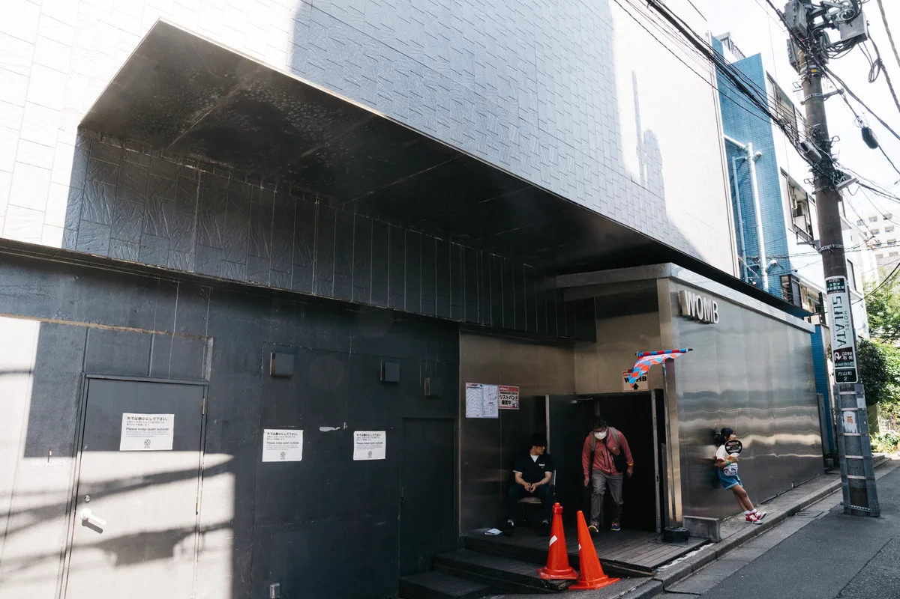
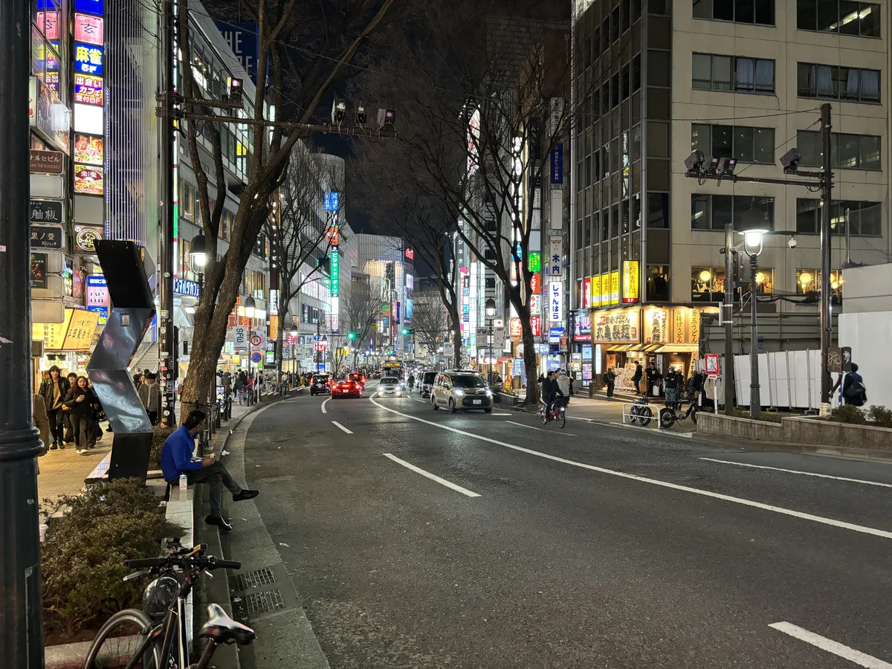

Tokyo clubs
The best clubs in Tokyo, from WOMB to the fight to legalise dancing
A city where dancing after 1am was a legal grey area until 2016, and where the best rooms for house, techno and bass music sit in Shibuya basements and a converted event hall on the docks.
Clubs built around a law against dancing.
Tokyo clubbing has a fact almost every visitor learns the hard way: for most of the city's postwar history, dancing itself was regulated like a vice. A law written in 1948 treated a dancefloor the way it treated a strip club, and it stayed on the books, on and off enforced, until 2016. Tokyo's clubs did not grow up in spite of that law so much as around it, in basements under Shibuya's love-hotel hill and in a waterfront warehouse in the reclaimed docklands of Shin-Kiba. This guide covers the clubs built for house, techno and bass music rather than the hostess clubs and members' bars that also answer to "club" in Tokyo, and it explains the law that shaped where they ended up.
Fifty years of a law against dancing.
The Businesses Affecting Public Morals Regulation Act, known as fueiho, was written in 1948. It classified any venue with dancing on a floor smaller than 66 square metres, or operating after 1am, alongside the city's adult entertainment trade, on the postwar assumption that a dancefloor was where prostitution happened. For about fifty years the rule was barely enforced. Clubs put up "No Dancing" signs as a formality and their customers ignored them.
That changed around 2011, when police began actively enforcing fueiho in Osaka, Fukuoka and then Tokyo, raiding clubs and prosecuting owners under a law written before rock and roll reached Japan. Clubs responded by hiring staff to physically stop people dancing, which is as strange to watch as it sounds.
The campaign to change the law had a name, Let's Dance, and in 2013 it delivered a petition with 155,879 signatures to Japan's National Diet, backed by a group of volunteer lawyers called Dance Lawyers. The cabinet agreed to lift the dancing ban in October 2014, a change some in the press linked to Tokyo's bid for the 2020 Olympics, and the law was formally relaxed in 2016. Clubs could now hold a permit to allow dancing past 1am, provided the room met lighting and distance-from-residential-housing conditions; Crack Magazine reported the lighting floor at above 10 lux, dim but not dark. It took a nationwide petition and a five-year court fight to arrive at that one sentence of permission.
Air and the clubs before the reform.
Two of Tokyo's most influential clubs never operated under the reformed law at all. Air opened in Daikanyama in 2001, a 500-capacity room that became one of the city's central addresses for house and techno, with Ben UFO, The Black Madonna, Daniel Avery, Kyle Hall and Marco Shuttle among the DJs who played there before it closed on New Year's Eve 2015, with no reason given beyond a short statement on its website.
ageHa opened in 2002 inside Studio Coast, a waterfront event complex in Shin-Kiba built on reclaimed industrial land, with four dance floors, an outdoor pool and a capacity that ran into the thousands on its biggest nights.
It billed itself as Japan's largest nightclub and ran for two decades before its lease expired; the farewell event, the Grand Final, was held on 30 January 2022, closing the building along with it.
The best clubs in Tokyo now.
| Club | Area | Music and character | Best for |
|---|---|---|---|
| WOMB | Shibuya | Four floors around a giant mirrorball, open since 2000 | Techno, drum and bass and electro, and the annual WOMB Adventure festival |
| Contact | Shibuya (Dogenzaka) | A basement built as Air's successor, open since 2016 | International techno and house bookings, and Boiler Room broadcasts |
| Vent | Minami-Aoyama | A smaller room built around sound quality, open since 2016 | A quieter, more serious night of house and techno |
| Circus Tokyo | Shibuya | Osaka's Club Circus's Tokyo outpost, open since 2015 | Drum and bass and bass music alongside house and techno |
| Solfa | Nakameguro | A smaller room outside the Shibuya cluster, open since 2009 | Techno, bass, house, disco and soul, away from the main strip |
Best techno clubs in Tokyo.
WOMB opened in the centre of Shibuya in April 2000 and has outlasted every club named above it. Four floors are built around a main room lit by what its operators call the biggest mirrorball in Asia, and the club has placed on Resident Advisor and DJ Mag's Top 100 Clubs lists for over a decade, at 67th in 2021 and 76th in 2023. WOMB Adventure, its annual indoor festival since 2008, draws close to 10,000 people across the building in one night.

Vent opened in Minami-Aoyama in 2016, the same year the fueiho reform took effect, from Global Hearts, the company behind Sound Museum Vision and Contact. It is a smaller, quieter room built around sound quality rather than spectacle, and Ken Ishii, the Sapporo-born producer known internationally as techno's face from Japan, has named it among his own favourites alongside Contact and WOMB.
Contact opened in April 2016 in a Dogenzaka basement, built as a successor to Air's role in the city, and became one of the rooms Boiler Room chose for its Tokyo broadcasts, including a 2019 session with the London project Broken English Club, the Berlin producer Rhyw and the Osaka techno artist Mars89. Sound Museum Vision, Contact's four-room sister venue nearby, closed in September 2022 after a run built on hip-hop, house and techno across a maze of connected rooms.
Boiler Room's first Tokyo broadcast, in June 2014, came before any of this: a house and disco set from Chida, alongside Force of Nature and the local crew Monkey Timers, recorded two years before dancing itself was fully legalised.
Wata Igarashi, a Tokyo techno producer who has since built an international profile on labels including Midgar and Kompakt, played a Boiler Room Tokyo broadcast in Shibuya in December 2016, the same year the reform took effect.
Where to go out in Tokyo.
Almost everything in this guide sits within walking distance of Shibuya Station, on or around Dogenzaka, the steep entertainment street of clubs, karaoke boxes and love hotels that gives the area its after-dark character.

Vent is a short taxi ride away in Minami-Aoyama, a quieter, more residential district that trades footfall for a stricter noise limit and a smaller room. Circus Tokyo, a short walk from Shibuya's main strip, was opened in October 2015 as a Tokyo outpost of Osaka's Club Circus and has built a reputation as the city's most consistent booker of drum and bass and bass music alongside house and techno, including its own New Year's Eve countdown. None of Tokyo's trains run all night, so a club night here runs until the first service resumes around 5am, or ends in a taxi.
Tokyo clubs FAQ.
Is dancing legal in Tokyo clubs?
Yes, since 2016. Fueiho, a law from 1948 that classed any dancefloor as adult entertainment and banned dancing after 1am, was relaxed that year to allow clubs a permit for dancing past that hour if the room meets lighting and location conditions. Before then, clubs technically operated with "No Dancing" signs that nobody obeyed.
What are the best clubs in Tokyo for foreigners?
WOMB and Contact are the two most visited by touring DJs and international clubbers, and both post English-language event details online; door staff at both are used to overseas visitors. Bring a passport rather than a driving licence, since Japanese venues generally do not recognise foreign driving licences as valid ID.
Is Tokyo good for clubbing?
Yes, for house, techno and bass music specifically, though the city's most visible nightlife is hostess clubs and members' bars rather than dance clubs, and its two biggest historic rooms, Air and ageHa, have both closed. WOMB, Contact and Vent carry the scene now, alongside smaller rooms such as Circus Tokyo.
What is Shibuya's Dogenzaka known for?
Dogenzaka is the steep street rising from Shibuya Station that holds most of the clubs in this guide, along with karaoke boxes, izakaya and Tokyo's largest concentration of love hotels, a mix that gives the street its reputation as the city's most concentrated nightlife district.
What time do Tokyo clubs close?
Most run until Tokyo's trains start again, around 5am, since taxis home are expensive and the subway does not run overnight. WOMB and Contact both regularly go past that into the following afternoon on their biggest nights.
Sources.
- Wikipedia: Businesses Affecting Public Morals Regulation Act
- Wikipedia: Womb (nightclub)
- Wikipedia: AgeHa
- DJ Mag: Tokyo club Air to close (2015)
- DJ Mag: Top 100 Clubs 2021, WOMB
- DJ Mag: Top 100 Clubs 2023, WOMB
- The Japan Times: Tokyo club scene's 'temple' may be gone, ageHa closes (2022)
- Crack Magazine: Japan has finally lifted their no dancing law (2016)
- Resident Advisor: WOMB, Tokyo
- Resident Advisor: Vent, Tokyo
- Boiler Room: Boiler Room Tokyo, Contact (2019)
- Boiler Room: Tokyo, TDME x Boiler Room (2016)
- MixesDB: Force of Nature at Boiler Room Tokyo (20 June 2014)
- Set counts and catalogue details are measured from this site's own catalogue of recorded DJ sets, as of September 2026.
Continue reading
Read next.
 Rave spots~11 min read
Rave spots~11 min readBest Clubs in NYC: From the Paradise Garage to Nowadays
Nowadays, Basement, Public Records, Good Room and Elsewhere: the best clubs in NYC for house and techno now, and the history from the Loft to Output.
Read article → Rave spots~6 min read
Rave spots~6 min readBest Clubs in Budapest: A38, Instant-Fogas and Turbina
A38's converted cargo ship, the seven rooms of Instant-Fogas and Turbina's techno nights: the best clubs in Budapest now, and the ruin bars several grew out of.
Read article → Rave spots~6 min read
Rave spots~6 min readBest Clubs in Prague: Cross Club, Karlovy Lázně and Ankali
Cross Club's salvaged machinery, Karlovy Lázně's five floors and Ankali's techno nights: the best clubs in Prague, mainstream and underground.
Read article → Festivals~13 min read
Festivals~13 min readBest Electronic Music Festivals in Europe 2027, Compared
Fourteen major festivals and seven smaller ones, from Tomorrowland to Garbicz, compared by sound, scale, setting and 2027 dates.
Read article →